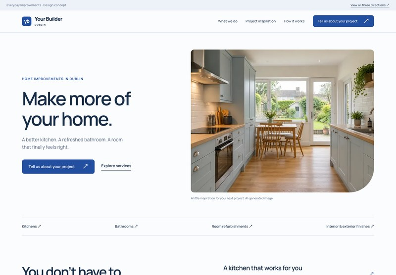
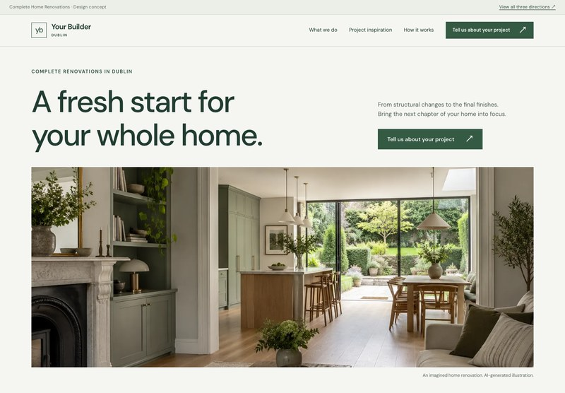
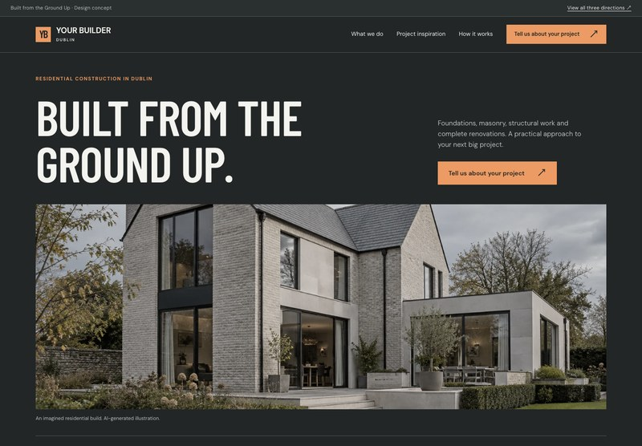

A / Rooms & smaller jobs
Everyday Improvements
A friendly, direct website for kitchens, bathrooms, a few rooms, and the jobs that make everyday life better.
Explore this website ↗
Design notes & screenshots
Feel: approachable, practical, reassuring.
Type: Manrope.
Layout: an inviting split hero, room-based service list, before/after example.
Enquiry: “Which room or job?”

B / Whole-home renovations
Complete Home Renovations
A considered, spacious website for homeowners planning a substantial change across their entire home.
Explore this website ↗
Design notes & screenshots
Feel: composed, thoughtful, residential.
Type: DM Sans.
Layout: wide architectural imagery, generous space, an asymmetric project story.
Enquiry: “What would you like to change?”

C / Construction & major works
Built from the Ground Up
A bold, structured website for foundations, masonry, structural work, and larger residential projects.
Explore this website ↗
Design notes & screenshots
Feel: substantial, capable, organised.
Type: Barlow Condensed + DM Sans.
Layout: strong headline, expansive exterior image, clearly grouped capabilities.
Enquiry: “What stage is your project at?”
Two domain options.
www.yourbuilderdublin.ie
A natural name for the business itself. Used throughout these concepts.
www.findbuilderdublin.ie
A search-focused alternative, centred on finding a builder in Dublin.
Both domains confirmed available by Vlad. Final name to be chosen with Daniel.